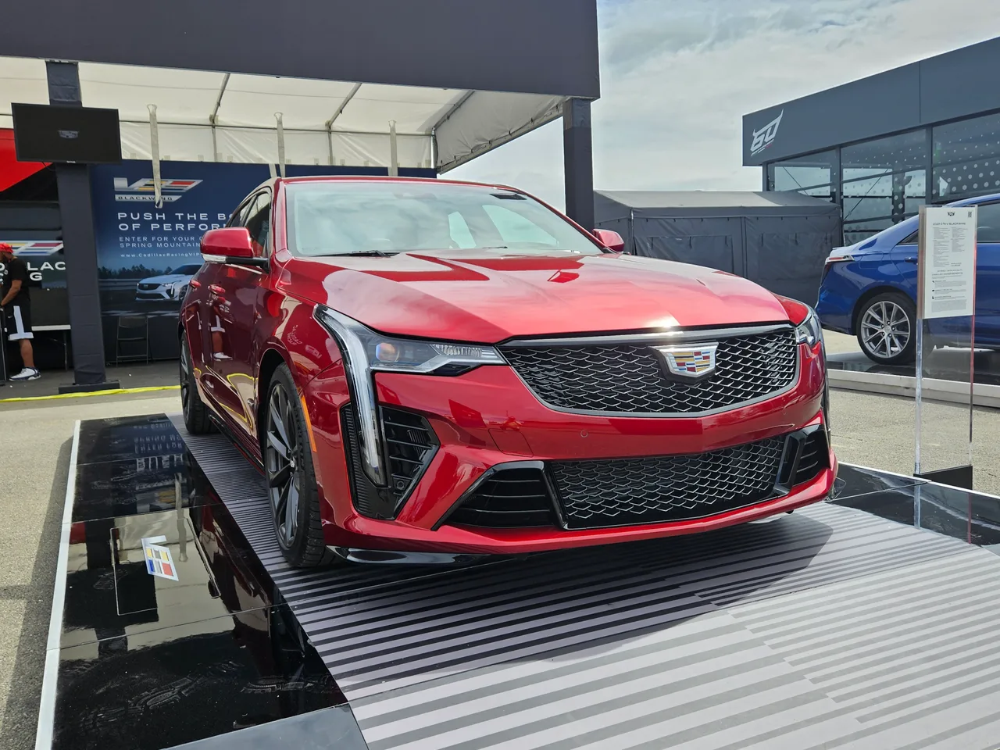
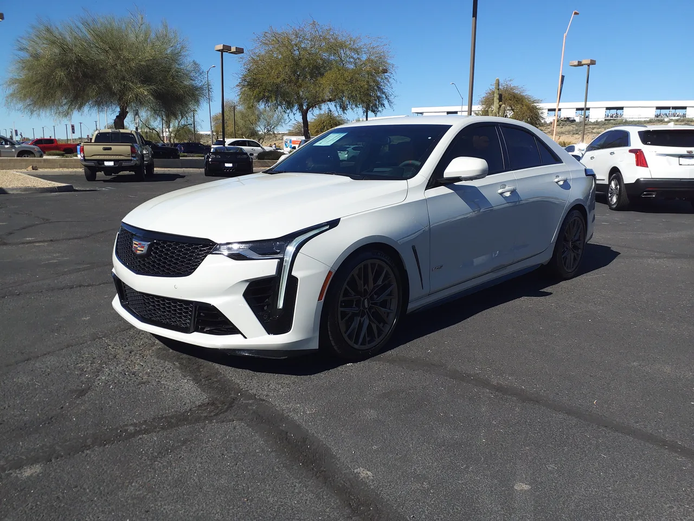

▲ 캐딜락 CT4-V 블랙윙. 트윈터보 V6에 6단 수동변속기를 조합한 미국 유일의 후륜구동 세단이지만, 2026년형을 끝으로 역사 속으로 사라진다
캐딜락 CT4-V 블랙윙이 2026년형을 끝으로 단종 수순을 밟습니다. 2027년형 라인업에서 제외되는 53개 차종 중 하나로 이름을 올린 것입니다. 이 차가 특별한 이유는 단순합니다. 트윈터보 V6 엔진과 6단 수동변속기, 그리고 후륜구동을 동시에 갖춘 세단이 현재 미국 시장에 이 차 하나뿐이기 때문입니다.
1. 472마력, BMW M340i보다 강한 V6
CT4-V 블랙윙의 심장은 3.6리터 트윈터보 V6 엔진입니다. 472마력, 445lb-ft의 토크를 내는데, 이는 경쟁 모델로 종종 비교되는 BMW M340i보다도 높은 출력입니다. 여기에 노-리프트 시프트(가속페달을 떼지 않고 변속 가능), 레브매칭, 숏스로우 시프터를 갖춘 6단 트레멕 수동변속기가 기본 사양으로 제공됩니다. 자동변속기를 원하는 소비자를 위한 10단 자동 옵션도 있지만, 이 차의 진짜 매력은 역시 수동변속기에 있습니다.

▲ CT4-V 블랙윙 후면. 4구 배기 팁과 트렁크의 'V시리즈' 배지가 이 차의 성격을 드러낸다. 캐딜락 엔지니어들은 개발 과정에서 BMW M3와 아우디 RS3를 벤치마크로 삼았다고 밝힌 바 있다
2. 숫자 너머의 감각 — 왜 '드림카'로 불리나
CT4-V 블랙윙이 마니아들 사이에서 특별한 대우를 받는 이유는 스펙표만으로 설명되지 않습니다. 우수한 무게 배분과 낮은 무게중심, 그리고 4세대 마그네틱 라이드 컨트롤이 제공하는 적응형 댐퍼가 어우러져 "정교하고 소통이 잘 되는" 스티어링 감각을 만들어냅니다. 여기에 사람이 직접 클러치를 밟고 기어를 넣는 수동변속기의 손맛까지 더해지면서, 단순히 빠른 차를 넘어 "운전하는 재미" 그 자체를 추구하는 소비자들의 드림카로 자리 잡았습니다.
| 항목 | 스펙 |
|---|---|
| 엔진 | 3.6L 트윈터보 V6 |
| 최고출력 | 472마력 |
| 최대토크 | 445lb-ft |
| 0-60마일(수동) | 약 4.1초 |
| 변속기 | 6단 수동(기본) / 10단 자동(옵션) |
| 구동방식 | 후륜구동 |

▲ 딜러 전시장의 CT4-V 블랙윙. 카본 세라믹 브레이크와 대형 휠이 이 차가 단순한 세단이 아닌 트랙 지향 스포츠 세단임을 보여준다
3. 왜 사라지나 — 전동화 시대의 필연
CT4-V 블랙윙의 단종은 개별 모델의 실패라기보다 업계 전반의 흐름을 보여주는 사례에 가깝습니다. GM을 포함한 완성차 업체들은 전동화 전환과 배출가스 규제 강화에 대응하기 위해, 판매량이 제한적인 니치 모델부터 순차적으로 라인업에서 정리하고 있습니다. 소형 세단 자체의 인기가 SUV에 밀려 하락한 것도 배경 중 하나입니다. CT4 자체가 소형 세단인 만큼, 후속 세대 개발 가능성도 낮은 것으로 알려져 있어 이번 단종이 사실상 완전한 마침표가 될 가능성이 큽니다.
4. 정리 — 지금이 마지막 기회
수동변속기, 트윈터보 V6, 후륜구동이라는 조합은 이제 CT4-V 블랙윙을 끝으로 미국 신차 시장에서 완전히 자취를 감출 예정입니다. 이 조합이 주는 순수한 운전 재미를 경험하고 싶은 소비자라면, 2026년형 재고가 남아있는 지금이 사실상 마지막 기회입니다. 단종이 예고된 만큼 향후 중고 시장에서도 희소성에 따른 프리미엄이 붙을 가능성이 높아 보입니다.